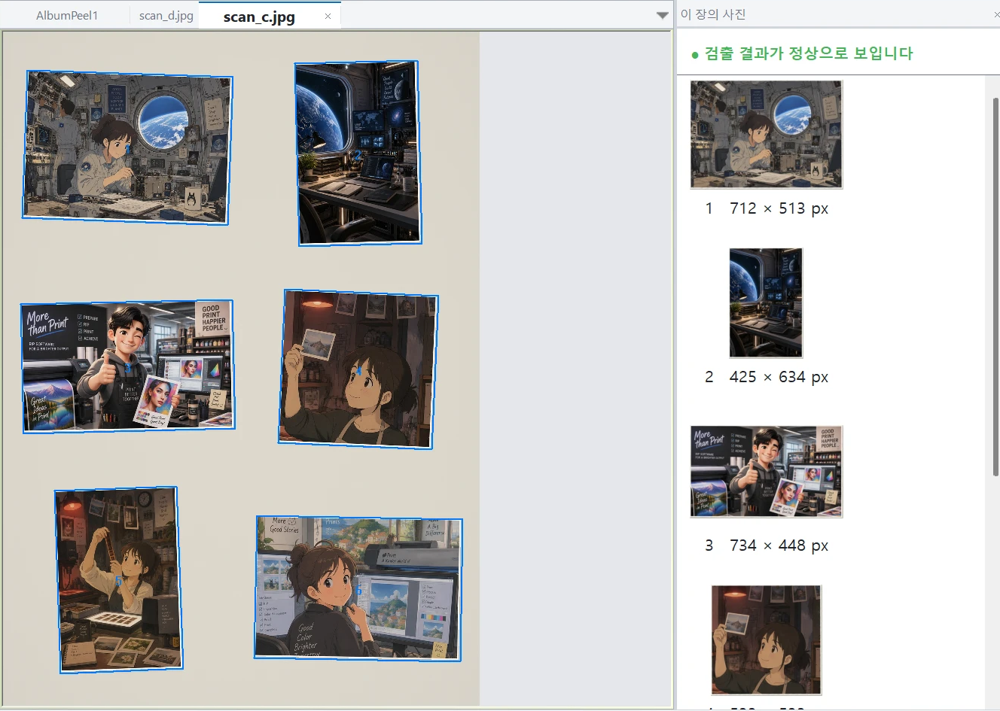
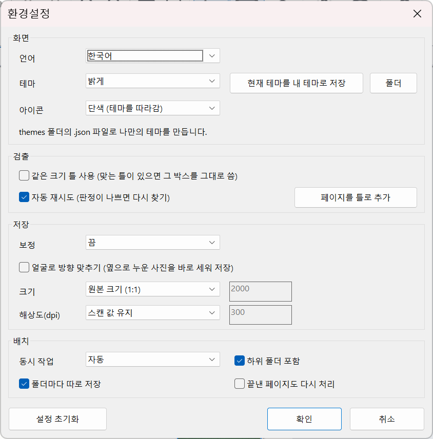

설치, 사용 방법, 배치, 환경설정, 자주 묻는 질문
이름_01.png, 이름_02.png … 로 저장됩니다. 기본은 원본 크기 1:1, 스캔 dpi 유지입니다.
박스가 어긋나면 모서리를 끌어 고치고, 빠진 사진은 빈 곳을 끌어 새 박스를 그립니다. 선택 후 Delete 로 삭제, 자물쇠 아이콘으로 잠금, Ctrl+Z / Ctrl+Y 로 실행 취소·다시 실행입니다. 고친 박스는 스캔 옆 작은 파일(이름.rects.json)에 기억되고 스캔 파일은 바뀌지 않습니다.
잘 되게 하는 요령: 사진 사이를 조금 띄우고, 뚜껑을 닫아 평평하게, 300 dpi 이상으로 스캔하세요.
리본의 배치 처리에서 파일·폴더를 추가하고(끌어다 놓기 가능), 저장 폴더와 형식을 정한 뒤 시작을 누르면 여러 페이지를 동시에 처리합니다. 언제든 중지할 수 있고, 이미 끝낸 페이지는 건너뜁니다. 저장 폴더에는 페이지마다 상태·사진 수·시간·검토 사유가 적힌 batch_report.csv 가 생기며, "검토 필요" 페이지만 고친 뒤 다시 시작하면 고친 페이지만 다시 저장됩니다.

보정과 얼굴 방향 맞추기의 기본값은 모두 끔입니다. 상태바에는 진행바와 현재 단계가 표시됩니다.
그 사진 둘레를 빈 곳에서 끌어 박스를 그린 뒤 모서리를 맞추세요. 자주 그렇다면 사진 사이를 더 띄워 스캔해 보세요.
환경설정 → 저장 → 크기가 원본 크기 (1:1) 인지 확인하세요.
이미 완료된 페이지이거나 편집 화면에서 열려 있는 페이지입니다. 환경설정의 "끝낸 페이지도 다시 처리"를 켜거나 편집 화면에서 닫으세요.
아닙니다. 결과가 평소와 달라 보인다는 뜻일 뿐이니 열어서 확인하세요.
절대 바꾸지 않습니다. 읽기만 합니다.
프로그램 파일이 바뀌었거나 보호가 풀린 경우입니다. 프로그램을 다시 설치해 주세요.
저장은 막히지만 검출·편집은 계속 쓸 수 있습니다. 새 이용권의 활성화 코드를 입력하면 대체됩니다.
XColor International, albumpeel@gmail.com. PC 코드와 복구 코드(라이선스 창)를 함께 보내 주세요.